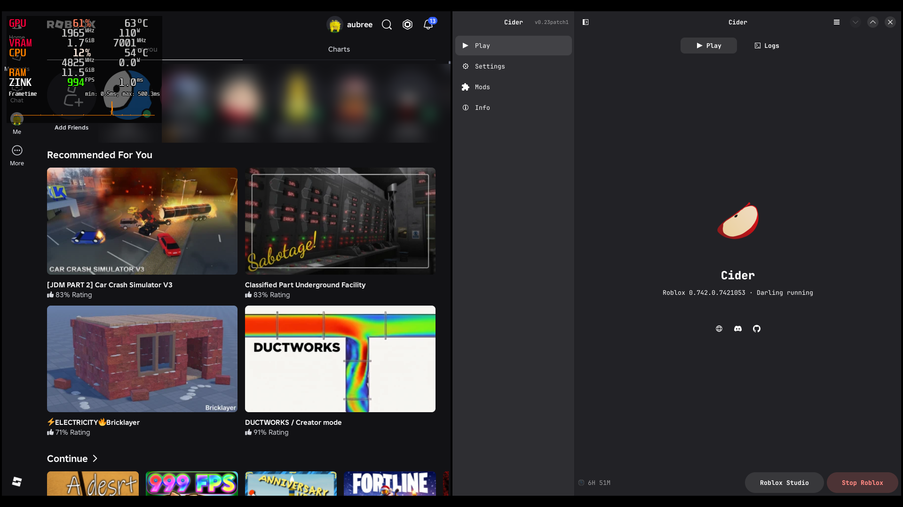
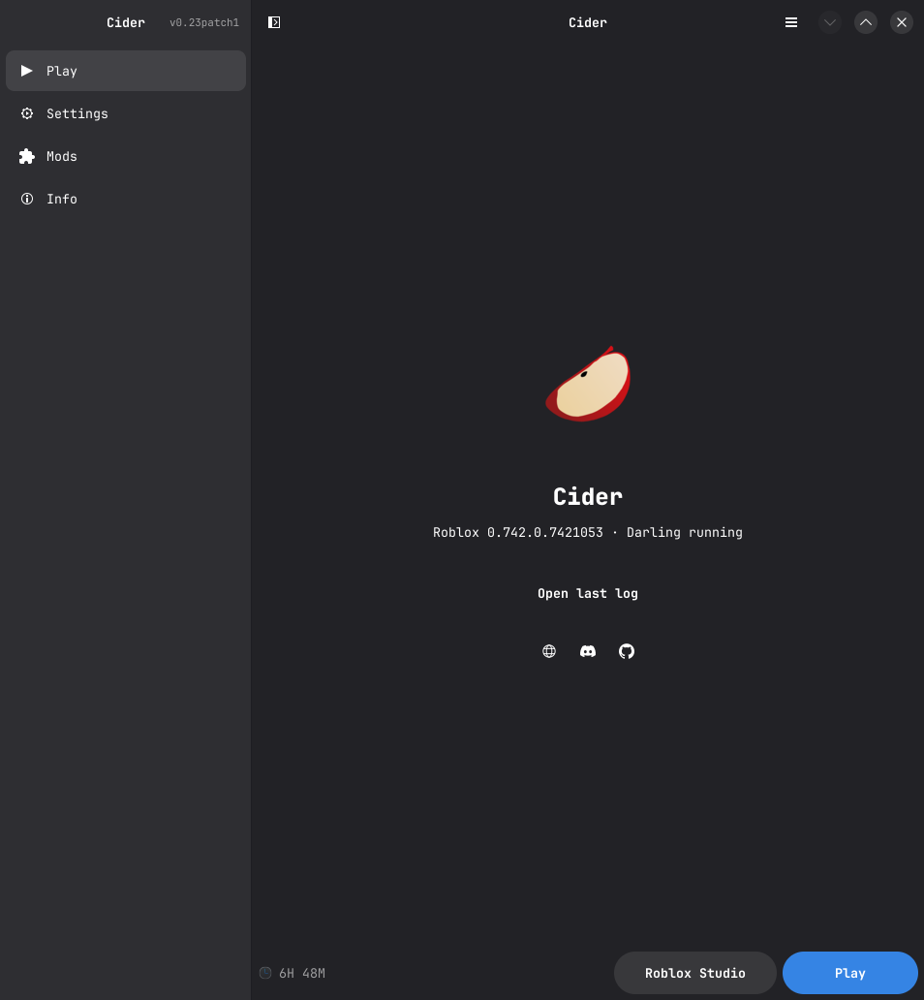
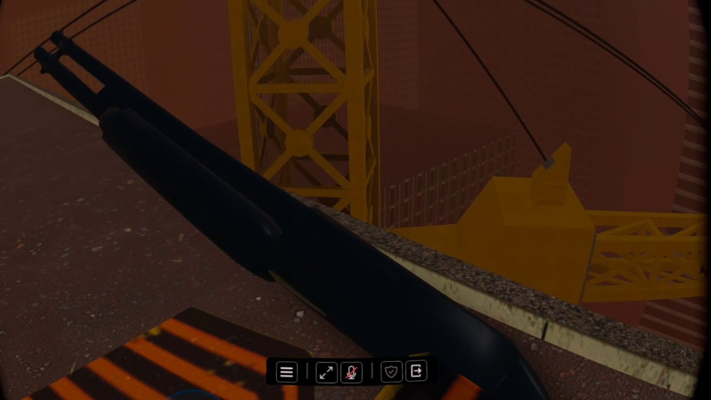
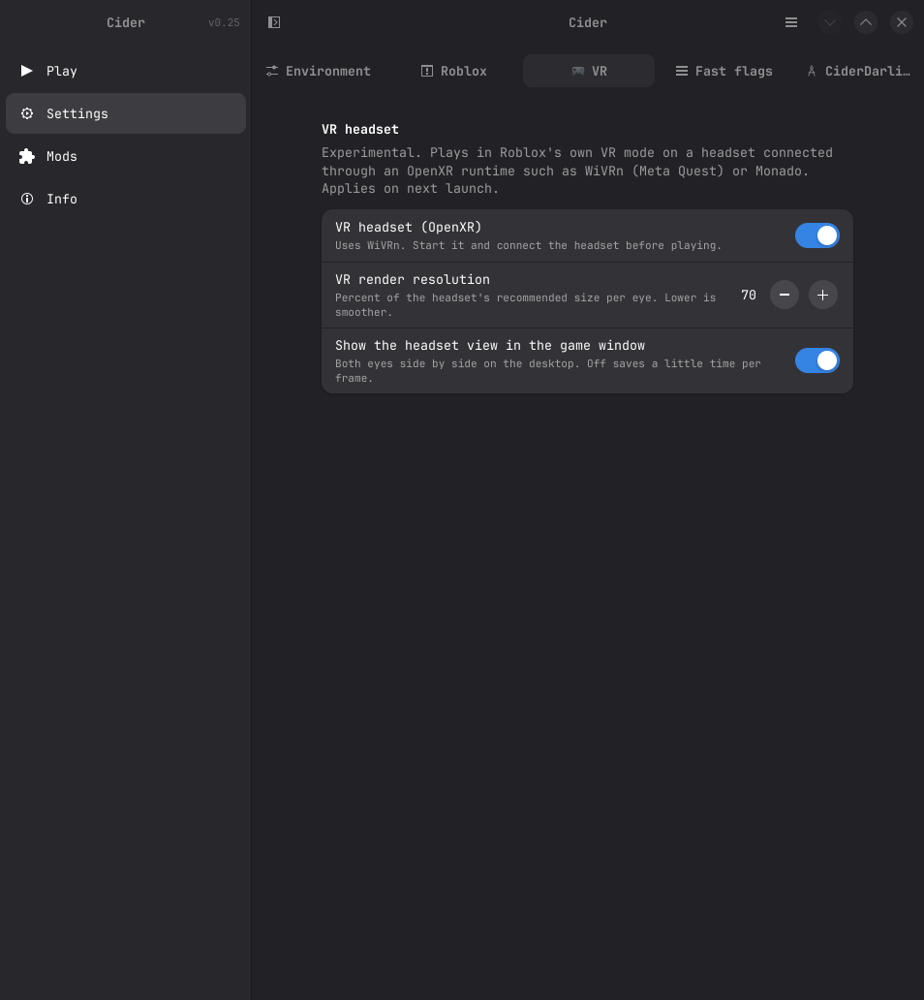

MacOS Roblox Client, but on Linux. :3
The macOS Roblox client, running on your Linux desktop through Darling.
- runs on darling with some improvements
- basic functionality
- fastflags, mods, and more
- roblox studio runs on wine itself
- vr headsets through openxr (experimental)
Roblox
screenshots



install
guideyou paste this in your terminal and you run it, so simple right?
curl -fsSL https://quadrahq.org/install.sh | bashyou run the script again and it updates, your sign in and settings will stay in place, so no need to do allat again
help
release notesWhat do I need?
An x86_64 Linux desktop with working graphics drivers (why wouldnt you have non working graphics drivers???????). The installer supports Arch (btw :3) and its relatives, Ubuntu 24.04+ (ew), Debian 13 (goat), and Linux Mint 22. Fedora needs Darling built from source because fedora doesnt have darling in their packages smh
What’s still broken
Theres still bugs, but Pull Requests are recommended and help out a lot! What we need so far is full vulkan (we are depending on zink at the moment), Native Wayland thats actually functional